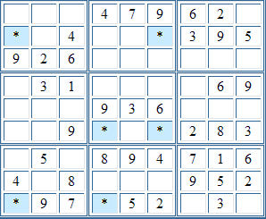

Sudoku Solving Techniques - SwordfishLook for three columns with only two candidates for a given digit. If these fall on exactly three common rows, and each of those rows has at least two candidate cells, then all three rows can be cleared of that digit - except in the defining cells. This is the original, "restrictive" definition. It has since been realised that a more relaxed definition is possible, in that the three columns can each have two or three candidates for the given digit - as long as they fall on the three common rows. Rows and columns can be swapped in the above description of course. Consider the following partially complete puzzle:  At this point, after performing candidate reduction using other techniques, we have a swordfish in the 1s. The marked cells are the only cells in columns one, four and six that can contain a 1, and because each of those columns must only contain one 1, and since the cells also share three common rows, the cells are linked in a similar manner to the X-wings. The net effect is that we can eliminate 1 from the candidates of the other cells in rows two, six and nine. Back to Sudoku Solving Techniques
|